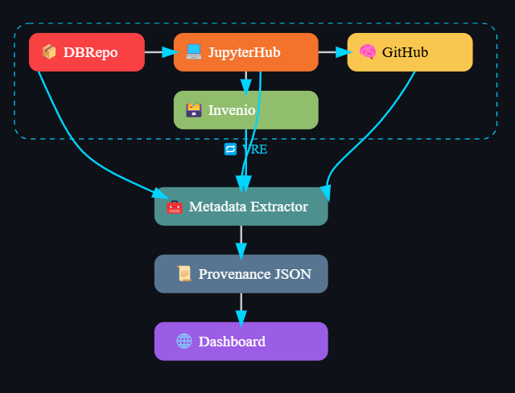

Project Overview
Designing a provenance architecture for Virtual Research Environments (VREs) to ensure transparent data traceability, collaborative workflows, and research reproducibility.
Project Highlights
- Built a scalable, modular provenance framework integrated into existing VRE platforms.
- Ensured end-to-end traceability of datasets, research processes, and collaborative workflows.
- Enhanced transparency, reproducibility, and data lineage in multi-institutional research environments.
Future Scope
Future developments include real-time provenance visualization, advanced access control mechanisms for sensitive data trails, and integration with AI-driven analysis of research workflows.
Empowering global research collaborations through transparent and trusted data ecosystems.